疾患名から探す
- 関節リウマチ
- 顕微鏡的多発血管炎
- 巨細胞性動脈炎
- シェーグレン症候群
- 全身性エリテマトーデス
- 強皮症
- 皮膚筋炎・多発性筋炎
- 結節性多発動脈炎
- 混合性結合組織病
- 好酸球性多発血管炎性肉芽腫症
- 高安動脈炎
- 成人発症スチル病
- 強直性脊椎炎
- 乾癬性関節炎
- ベーチェット病
- サルコイドーシス
- 再発性多発軟骨炎
- リウマチ性多発筋痛症
関節リウマチ
免疫の異常により、四肢の関節を中心に炎症が起こる自己免疫疾患です。
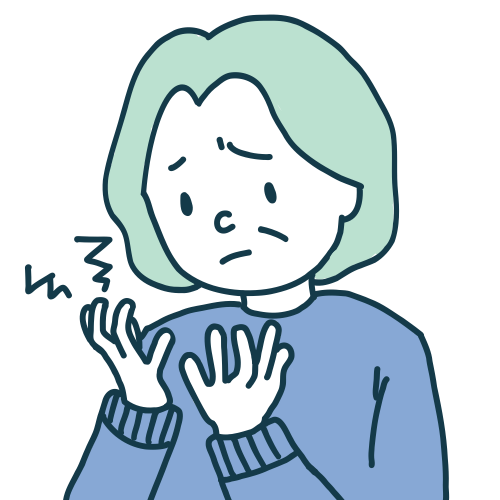
関節が腫れたり、痛んだり、変形したりするといった症状が特徴です。特に、朝起きた時や長時間の安静後に関節がこわばり、動きづらくなることが多いです。
関節の痛みだけでなく、全身倦怠感や発熱、体重減少などの症状が出ることもあります。
血液検査でリウマチ因子や抗CCP抗体といった自己抗体を認める他、手足のレントゲンやエコー検査で関節の病変を確認し総合的に診断いたします。
治 療
病気の進行を抑えるための薬物療法が有効です。特に、痛みや炎症を抑える薬、病気の根本的な原因となる免疫反応を抑える薬などが用いられます。
病状によっては、生物学的製剤の注射薬を使用することがあります。
顕微鏡的多発血管炎
細小動・静脈や毛細血管など小さい血管に炎症を起こし、出血や血栓を形成することで血流障害や壊死をきたし、臓器機能に不具合を生じる全身性の自己免疫疾患です。
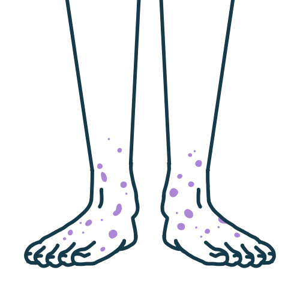
発熱、体重減少、易疲労感、筋痛、関節痛などの全身症状とともに、血管に炎症を生じるため、出血や虚血・梗塞によるさまざま症状・あらゆる臓器に障害を起こしえます。
障害を生じやすい臓器は、腎臓・肺といわれます。腎臓では、尿検査異常（尿潜血、蛋白尿、赤血球円柱など）、腎機能低下（クレアチニン上昇）がみられます。
肺では、間質性肺炎や肺胞出血が生じ、息切れ、空咳、血痰などがみられます。その他に、皮膚では紫斑、皮下出血、皮膚潰瘍などがみられます。神経では手足のしびれや筋力低下などの末梢神経障害がみられ、治療後も残ることがあります。
腎・肺・神経などの主要症候、細小動静脈血管の炎症・壊死などの組織所見、血液検査で、MPO-ANCA陽性などの検査所見から診断します。
また、指定難病のため重症度に照らした上で医療助成の対象となることがあります。
感染症、薬剤、悪性腫瘍、血栓塞栓症、その他の膠原病などでも血管炎を疑うような症状やANCA陽性化があるので、充分な鑑別が必要です。
炎症を消失させ、その状態を維持することが目標になります。
治療としては、副腎皮質ステロイドや免疫抑制剤の他に、透析療法の一つである血漿交換などが治療適応になることがあります。
巨細胞性動脈炎
おもに頭頸部の⼤動脈およびそこから枝分かれする浅側頭動脈（こめかみを通過する動脈）や眼動脈（⽬を栄養する動脈）などに慢性的な炎症を起こす⾃⼰免疫疾患です。
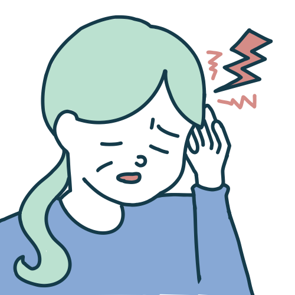
ズキズキと拍動する⽚側の側頭部の痛み、視⼒低下、視野狭窄などの眼症状、物を噛んだときのあごの痛み・疲れ、⾸や肩の痛みなどが特徴的な症状です。
その他に、発熱、体重減少、だるさなどもみられることがあります。リウマチ性多発筋痛症を合併することがあります。
⾼齢者で新たに出現した側頭部痛、眼症状、発熱および炎症反応の上昇からこの病気を疑います。
炎症反応の上昇と超⾳波、造影CT、MRI、PET-CT、⾎管造影検査により⾎管の壁が厚くなっていることを確認します。
巨細胞性動脈炎は、2015年より厚⽣労働省の定める指定難病のため設定されました。重症度に照らした上で医療助成の対象となることがあります。
急性期の⾎管の炎症には副腎⽪質ステロイドが効果的です。ステロイドを減らすと再び病気が悪化（再燃）することがしばしばみられます。
再燃する場合には免疫抑制薬、⽣物学的製剤を使⽤します。
シェーグレン症候群
涙腺や唾液腺などに異常が生じ、目や口に乾燥などの症状が現れる自己免疫疾患です。
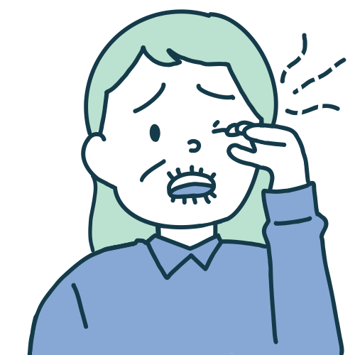
主に目の乾燥（ドライアイ）、口腔乾燥（ドライマウス）があります。上記の乾燥症状以外に、全身性に何らかの臓器病変（全身倦怠感・関節痛・皮疹・光線過敏症・間質性肺炎・神経障害・腎障害・筋症状・血液検査異常など）を生じることがあります。
そして一部の方には悪性リンパ腫（リンパのがん）や原発性マクログロブリン血症といった血液疾患の合併を認めることがあります。
血液検査で自己抗体を測定することや、涙や唾液の分泌量を調べることで診断されます。
唾液腺や涙腺の一部の組織を採取し、炎症細胞の存在を確認することで確定診断となる場合もあります。
現状では根本的に治癒を目指す治療法はありません。
ドライアイに対しては点眼薬や局所治療、ドライマウスに対しては内服薬やうがい薬、唾液腺マッサージなども行われることがあります。肺や神経、関節などの症状に対しては重症度に応じてステロイドや免疫抑制薬が使用されることがあります。
全身性エリテマトーデス
全身性エリテマトーデスとは全身のさまざまな臓器に炎症や障害を起こす自己免疫疾患です。
特に関節、皮膚、腎臓、神経などを中心に症状が現れます。病気の原因は不明ですが、20-40歳台の女性に発症しやすいことが知られています。
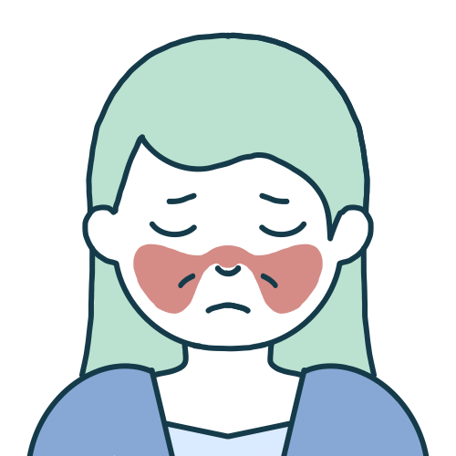
発熱、全身倦怠感などの全身症状、関節痛、皮疹、光線過敏症、脱毛、口内炎がみられる症状です。
もっとも有名なのは両側の頬部と鼻に広がる皮疹で、蝶形紅斑と呼ばれます。
重症の方の場合にはループス腎炎と呼ばれる腎臓の障害や神経精神症状などを生じることもあります。
シェーグレン症候群や抗リン脂質抗体症候群などの他の自己免疫疾患を合併することが知られています。
この病気では抗核抗体が陽性になり、よく出現する自己抗体としては抗ds-DNA抗体、抗Sm抗体、抗リン脂質抗体があげられます。
その他に、白血球減少、血小板減少や免疫グロブリンの増加、補体の低下が出現することがあります。上述のような免疫的な検査（自己抗体、補体低下の有無など）と尿検査（蛋白尿の有無）を調べ、皮膚症状、関節症状、神経精神症状などの症状と合わせて診断されます。
腎炎を合併している場合は、腎臓の組織の一部を取ることで確定診断となる場合もあります。全身性エリテマトーデスは指定難病のため重症度に照らした上で医療助成の対象となることがあります。
皮膚症状や関節症状に対しては消炎鎮痛薬や少量ステロイド、ヒドロキシクロロキンなどが用いられます。
腎炎や中枢神経病変などを合併した重症例では、必要に応じて、ステロイドパルス療法や大量ステロイド療法、免疫抑制薬（シクロフォスファミド、ミコフェノール酸モフェチル、アザチオプリン、タクロリムスなど）、生物学的製剤 (ベリムマブ）が使用されます。
強皮症(全身性強皮症)
皮膚を中心に体のさまざまな臓器が線維化する病気です。免疫の異常により起こる自己免疫疾患の一種です。指先の色が変わるレイノー現象が生じることがあります。
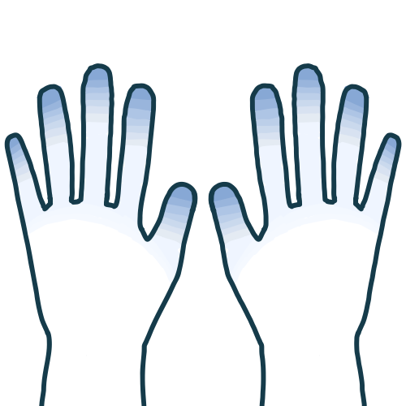
皮膚が硬く、つっぱるような症状が出現します。
その他に、肺・消化管・食道・心臓など全身の様々な内臓が徐々に硬くなる変化（線維化）や、手足の先の血行が悪くなる変化（末梢循環障害）を特徴とする病気です。病気の原因は不明です。男女比は1：10で女性に多く、30-60歳代の方に発症しやすいとされています。個々の患者さんで経過や病状は異なりますが、肘・膝より体幹側まで皮膚硬化がおよぶタイプ（びまん皮膚硬化型）の方は、発症5年以内に内臓病変が出現しやすいです。
血液検査では、抗核抗体や抗セントロメア抗体などを調べます。
皮膚や内臓の機能を確認するために、胸部X線やCT検査、超音波検査を実施します。必要に応じて筋肉や肺の機能を測定する検査も行われます。
現時点ではこの病気の根本的な治療法は確立されていません。そのため、皮膚硬化の進行ピークを抑え、内臓病変の出現や進行を抑えることが治療目標になり、びまん皮膚硬化型の発症早期では免疫抑制薬が使用されます。
間質性肺疾患に対しては、進行を抑える抗線維化薬が使用されます。対症療法としては、レイノー現象や皮膚潰瘍に対する血管拡張薬、肺高血圧症に対する選択的肺血管拡張薬、逆流性食道炎に対する制酸薬などが挙げられます。
皮膚筋炎・多発性筋炎
筋肉や皮膚、肺を中心に全身に炎症が生じる自己免疫疾患の一つです。特徴的な皮膚症状がみられる場合を皮膚筋炎、皮膚症状を伴わない場合を多発性筋炎と呼びます。
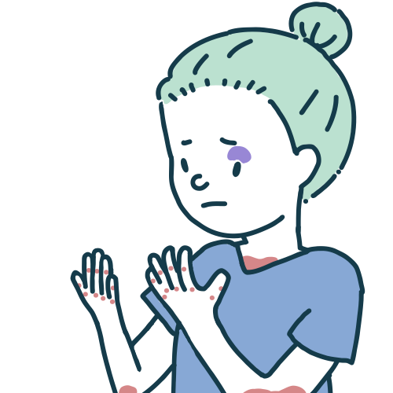
手足の筋力の低下や痛み、顔や手指に特徴的な皮疹が生じます。
痰が絡まない乾いたような咳や息切れがある場合は肺病変（間質性肺炎）が合併している可能性があり、急速に病気が悪くなることがあるため、早期に治療が必要となります。その他、悪性腫瘍が合併する場合、体重減少、食欲不振がみられることもあります。
血液検査で、筋肉の酵素（クレアチンキナーゼなど）の増加や、筋炎関連抗体（筋炎に特有の抗体）を調べます。筋電図や筋肉の生検を行い、炎症の状態を確認します。
X線やMRIも利用して、関節や筋肉の異常を評価します。その他に、呼吸器症状を伴う場合は肺病変（間質性肺炎）が合併している可能性があり、合わせて検査を。
治療はステロイド剤と免疫抑制剤を併用します。本疾患では悪性腫瘍が合併している場合もあることから、悪性腫瘍を除外するような検査を実施することがあります。
その際には、悪性腫瘍の治療を同時または筋炎の治療に先行して行うこともあります。
結節性多発動脈周囲炎
結節性多発動脈炎は、血管の炎症によって全身にさまざまな症状を引き起こす疾患です。
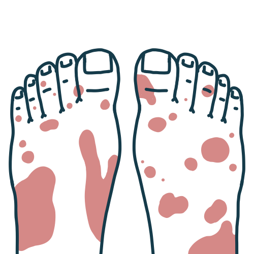
高熱、体重減少、筋肉や関節痛が現れます。皮膚に発疹や紫斑が見られることもあり、内臓（腎臓、心臓、肺など）に影響を与えると、命に関わる場合があります。
診 断
血液検査で本疾患に特徴的な検査項目はありません。
炎症マーカー（CRP、ESR）の上昇が見られます。動脈造影や造影剤を用いたCT検査などの画像検査を用いて、血管の異常を評価します。
生検により、炎症や血管の損傷を確認することが診断を確定するために重要です。
ステロイドや免疫抑制薬（シクロホスファミドなど）で炎症を抑え、血管の損傷を防ぐ治療を行います。重症例には、強力な免疫抑制が必要となることがあり、定期的な経過観察が重要です。
混合性結合組織病
膠原病の代表的疾患である全身性エリテマトーデス（SLE）様、全身性強皮症様、多発性筋炎/皮膚筋炎様の症状が混在し、血液の検査で抗U1-RNP抗体が高力価陽性となる疾患として提唱されました。
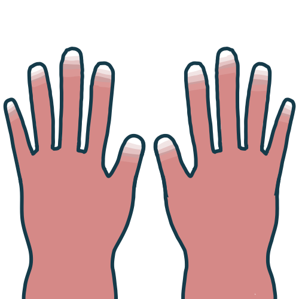
関節炎、筋肉痛、レイノー現象、皮膚の発疹が典型的です。特に手足の指の冷感やしびれが目立ち、内臓に影響が出ることもあります。食道や肺、腎臓にも問題を引き起こすことがあります。
診 断
血液検査で抗U1-RNP抗体を調べ、臨床症状と照らし合わせて診断します。
その他、X線や心臓超音波などで関節や内臓の状態を評価します。多くの症状が重複するため、他の疾患との鑑別が重要です。
ステロイドや免疫抑制薬を使用して、炎症を抑制します。
個々の症状に応じて治療法を調整し、内臓障害が進行しないように管理します。定期的なフォローアップが必要です。
好酸球性多発血管炎性肉芽腫症
好酸球性多発血管炎性肉芽腫症とは、気管支喘息や副鼻腔炎を有する方において、好酸球（白血球の一種）が異常に増殖することにより全身の細い血管に炎症が生じ、さまざまな臓器に障害がみられる病気です。
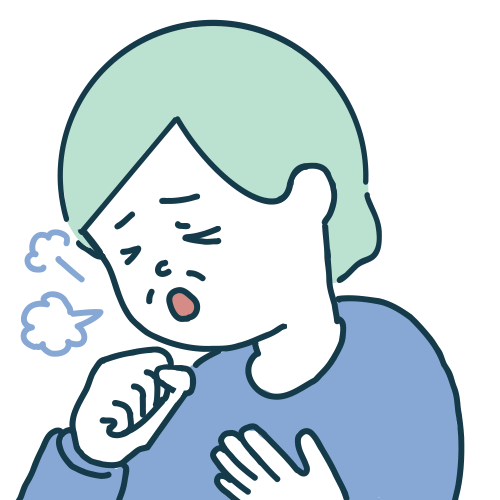
咳、呼吸困難が見られることがあります。皮膚(紫斑)や内臓（特に肺、腎臓）に症状が現れ、神経障害(手足のしびれ、動かしにくさ)や消化器症状が現れることもあります。
診 断血液検査で好酸球の増加が確認されます。肺や腎臓の画像検査を行い、炎症や肉芽腫の形成を確認します。組織生検で確定診断が得られることが多いです。
治 療ステロイドや免疫抑制薬（アザチオプリン、シクロホスファミドなど）で炎症を抑え、喘息の管理を行います。症状の重篤さ度に応じて、治療法を強化選択することが必要です。
高安動脈炎
大動脈とそこから枝分かれする大きな血管に炎症が生じ、血管が 狭窄 したり閉塞したり拡張したりして、脳、心臓、腎臓といった重要な臓器に障害を与えたり、手足が疲れやすくなったりする血管炎に分類される疾患です。比較的、若年の方に多い病気です。
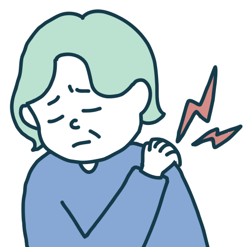
高安動脈炎は、動脈が炎症を起こし、特に手足の脈が触れにくくなったり、血流が悪くなる病気です。
高血圧や視力障害、体の一部の冷感などが現れます。動脈の狭窄や閉塞が進行すると、内臓の機能障害や脳卒中のリスクが増大します。
血液検査で本疾患に特徴的な検査項目はありません。炎症マーカー（CRP、ESR）を調べ、動脈造影や超音波で血管の状態を評価します。CTスキャンやMRIで内臓の血流の異常を確認することもあります。
治 療ステロイドや免疫抑制薬で炎症を抑え、血流を改善する治療が行われます。動脈の狭窄や閉塞が進行している場合、手術や血管拡張手術が必要となることがあります。
成人発症スチル病
発熱、皮疹、関節症状を主な症状とする全身性の炎症疾患です。発熱に伴って皮疹や関節痛がみられ、解熱とともに皮疹、関節痛が消失するという症状が特徴的です。
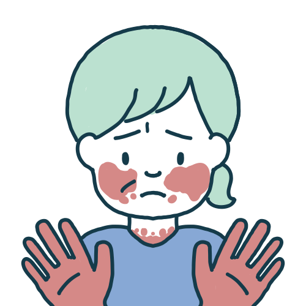
成人発症スチル病は、高熱（夕方から早朝にかけて38～39℃の発熱がスパイク状にみられ、日中は解熱することが多い）、発疹、関節痛(発熱時に出現し解熱とともに消退する)を特徴とする疾患です。
熱が続くとともに、全身のリンパ節が腫れることもあります。肝臓や脾臓が腫れることもあります。
血液検査で本疾患に特徴的な検査項目はありません。炎症マーカー（CRP、ESR）の上昇が見られます。
その他に、白血球増多、肝機能障害、血清フェリチン値の上昇などがみられることが多いとされています。診断は臨床症状に基づき、発疹や高熱、関節痛が揃っているかを確認します。類似の症状を示す他の疾患(膠原病など)を除外することが重要です。
ステロイドや免疫抑制薬（メトトレキサートなど）が使用されます。症状が重症化すると、生物学的製剤（抗IL-6薬）を使うこともあります。治療は症状に応じて調整します。
強直性脊椎炎
背骨や骨盤の関節・靭帯に炎症が起きる若い男性に多い病気で、初期症状の多くは、特に誘因のない腰(3ヶ月以上続く)やお尻の痛みを認めます。
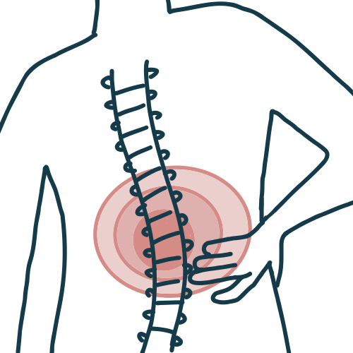
腰部痛は、安静にしていても痛みは治まらずにかえって強まり、身体を動かすと反対に症状が楽になる特徴があります。
症状が進行すると、背中が曲がり、運動能力が低下することもあります。関節に痛みを伴い、進行すると関節が硬直します。
血液検査でHLA-B27の有無を調べることができます。X線やMRIを用いて脊椎の変形や炎症を確認します。
治 療非ステロイド性抗炎症薬（NSAIDs）で痛みや炎症を抑えます。進行を防ぐために、生物学的製剤や免疫抑制薬が用いられることもあります。理学療法で可動域を維持し、痛みを緩和することが重要です。
乾癬性関節炎
乾癬という皮膚疾患に合併する、関節や腱付着部、指に炎症をきたす病気です。日本人では、乾癬を発症した患者さんの10～15％に発症するといわれています。
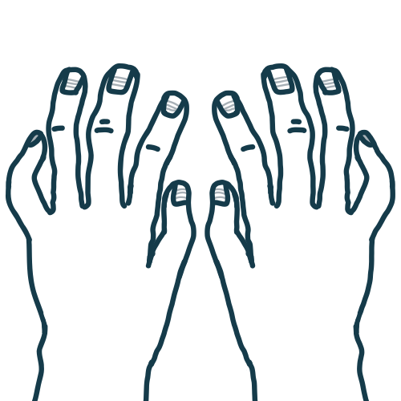
乾癬性関節炎は、乾癬の皮膚症状に伴って、関節に炎症が生じ、関節痛や腫れを引き起こします。
乾癬性関節炎の症状は大きく分けて5つあります。
・末梢関節炎：手足の指の第1関節を中心に、左右非対称に多関節が侵されます。
・腱付着部炎：アキレス腱や膝蓋腱など、腱・靭帯が骨に付くところに痛みを認めます。
・指趾炎：手足の指がソーセージの様に腫れます。足の第3・4趾によくみられます。
・脊椎関節炎：背骨や仙腸関節に炎症がおこり、腰痛（安静時に強くなり、動き出すと改善する）を認めます。
・爪病変：爪の一部の剥離、肥厚、凹みを認めます。爪病変がある指は関節炎が起きやすいことが分かっています。
血液検査で炎症マーカーを調べ、X線や関節の超音波で変形や炎症を確認します。乾癬の皮膚症状の有無も診断のポイントとなります。
治 療非ステロイド性抗炎症薬(NSAIDs)や抗リウマチ薬などの免疫抑制薬で炎症を抑えます。生物学的製剤（抗TNF-α薬など）を使って、乾癬と関節炎の両方を治療します。早期治療が関節の損傷を防ぐために重要です。
ベーチェット病
口内炎の症状を特徴として、その他に全身性に多彩な症状を起こす炎症性疾患です。病気の原因はいまだ不明です。
病気になりやすい遺伝素因、環境因子（ウイルス・細菌などの微生物、食事・喫煙などの影響）が加わることで、病気を発症するのではないかと考えられています。
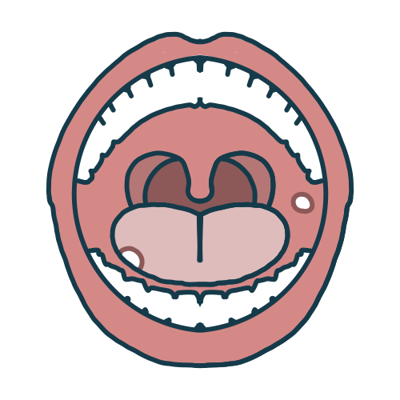
ベーチェット病は、口内炎や性器潰瘍、皮膚の発疹、眼の炎症（ぶどう膜炎）などが特徴的です。
これに加えて、血管や神経、内臓に炎症を引き起こすこともあります。症状は再発と寛解を繰り返します。
口内炎、皮膚症状(痛みを伴う皮疹やにきび様の皮疹)、陰部潰瘍、眼症状の４つの症状が特徴的といわれます。
４つすべての症状が出る人を完全型ベーチェット病、一部しか出ない人を不全型ベーチェット病と区別することがあります。消化管・血管・神経病変を持つ人は、特殊型ベーチェット病と言われています。
上記の特徴的な症状が繰り返し起こり、かつ、似たような症状を示す他の病気（ウイルスなどによる感染症、別のリウマチ・膠原病疾患など）の可能性が低いとき、ベーチェット病と診断します。
血液検査などでこの病気に特徴的な検査はありません。「ヒト白血球抗原（HLA）」という白血球の血液型が診断に有用であることが言われています。
コルヒチンやステロイドや免疫抑制薬、抗TNF-α薬などを使用して、炎症を抑えます。特に眼の炎症に対する治療が重要で、重症化する前に早期に対応することが必要です。
サルコイドーシス
サルコイドーシスは、肺や心臓、リンパ節、皮膚などに肉芽腫が形成されて臓器を障害する疾患です。
発生した病変の部位によって名称が異なり、肺に発生した場合は肺サルコイドーシス、眼に発生した場合は眼サルコイドーシス、心臓に発生した場合は心臓サルコイドーシスと呼び、それぞれが区別されることがあります。
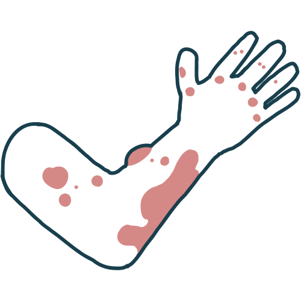
サルコイドーシスを発病しても約3～4割の人には自覚症状がなく、レントゲンや心電図など健康診断によって見つかることがあります。
咳や呼吸困難、胸の痛みがみられることもあり、皮膚に発疹や目の炎症が現れることもあります。全身の倦怠感や発熱も見られます。
肺の病変では、胸部X線やCTスキャンで肺の異常を確認し、最終的には、病変の組織を一部採取して顕微鏡で調べる生検によって、サルコイドーシスに特徴的な類上皮細胞肉芽腫(乾酪壊死を伴わない)を証明することで診断を確定します。その他に、皮膚やリンパ節、心臓の病変でもそれぞれ組織を採取して診断を行うことがあります。
治 療軽症の場合は経過観察が行われ、重症例にはステロイド剤が使用されます。肺や目に深刻な影響がある場合は、免疫抑制薬や生物学的製剤を使用して症状をコントロールします。
再発性多発軟骨炎
軟骨に原因不明の炎症が繰り返し起きる疾患です。おかされる軟骨としては耳介軟骨が多く、次いで気道、眼、鼻、関節等が続きます。気道の軟骨に炎症を起こすと気道狭窄 や閉塞をきたす可能性があり、さらに頻度は低いものの臓器の重要性によって心臓や脳の病変も生命を脅かす恐れがあります。希少疾患の一つです。
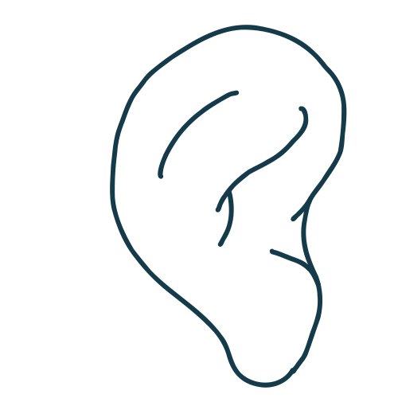
再発性多発軟骨炎は、耳、鼻、関節に痛みや腫れを伴う疾患です。軟骨が破壊されることがあり、進行すると耳が変形することがあります。発症が突然で、再発を繰り返す特徴があります。
診 断臨床症状やX線検査を基に診断が行われ、軟骨の異常を確認します。診断が確定すると治療が必要となることがあります。
治 療ステロイドで炎症を抑える治療が中心となります。再発しないように、長期的な治療が求められます。
リウマチ性多発筋痛症（PMR）
頸部、肩、腰部、大腿など四肢近位部の痛みやこわばりを生じる原因不明の炎症性疾患です。
男女比は1:2で、50歳以上の中高年に多く発症します。ステロイドが奏功し予後良好な疾患ですが、PMRの約20%に巨細胞性動脈炎（側頭動脈炎）を合併することがあります。

後頸部～肩、上腕にかけてと、腰背部～股関節、大腿部に痛みを生じ、日常生活に支障が出る疾患です。
特に、「痛くて寝返りをうてない」「痛みやこわばりで起き上がれない」「肩や腕があがらなくなった」などの症状を訴えます。発症日を覚えているくらい比較的急性に発症し、起床時から午前中に症状が強くて関節痛を伴うこともあります。
この疾患に特徴的な血液検査はありません。PMRの診断には、ヨーロッパリウマチ学会・米国リウマチ学会によるリウマチ性多発筋痛症の分類基準 (ACR/EULAR 2012)が用いられています。この基準では、①50歳以上 ②両肩の痛み ③炎症反応（ CRPまたは赤沈）の上昇を満たすことが必須条件で、さらに臨床症状（45分以上持続する朝のこわばり、臀部痛または股関節の可動域制限、肩関節と股関節以外に関節症状がない）、検査所見（リウマトイド因子、抗CCP抗体が陰性）、関節エコー所見（肩峰下滑液包炎、三角筋下滑液包炎、転子滑液包炎を検出）などからPMRを疑います。
治 療治療の第一選択薬はステロイド剤です。ステロイド反応性は比較的良好ですが、ステロイド減量中の再燃や、ステロイドによる副作用がある場合は、関節リウマチの治療薬であるメトトレキサートを併用することがあります。
次のような症状や不安を感じている方も、お気軽にご相談ください
- 朝起きたときに手や関節がこわばって動きにくい
- 原因が不明で長く続く(2週間以上)微熱・発熱・体の不調
- 目や口が渇く
- 関節が腫れて痛みが続いている
- 疲れやすく、倦怠感が続いている
- 関節だけでなく筋肉や骨、こめかみなどに痛みを感じる
- 皮疹（顔面、指先など）、脱毛、皮膚硬化(皮膚が固くなる・つっぱる)がある
- 顔面、四肢の湿疹、脱毛や爪とその周囲に変形など、体に複数の異変を感じている
- 太陽に当たると皮膚に異常が出る、または体調が悪くなる
- 呼吸が苦しくなることがある、間質性肺炎と言われたことがある
- 検診などで異常値が出た(抗核抗体陽性、リウマトイド因子(RF)が陽性)など気になることがある方
- 症状が一時的に改善したが、再び悪化していると感じる方
- 特定の疾患を否定されたが、症状が続いている方
- 他院で治療を受けているが、症状の改善が見られない方
- 家族に関節リウマチや膠原病の患者がいて、自分も心配である